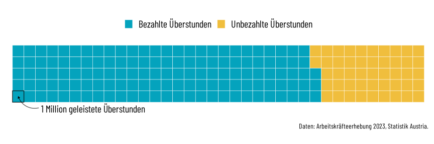

{kind=link}

Eine kurze Geschichte der Arbeitszeit
“Es geht aber in einer Zeit, wie die jetzige ist, nicht an, dass auf der einen Seite Zehntausende Menschen länger als acht Stunden, zehn und elf Stunden arbeiten, während anderseits viele Zehntausende Menschen vollständig arbeitslos sind und nicht den nötigen Erwerb zu finden vermögen.”
Die Errungenschaft des Achtstundentages
Der Achtstundentag war eine der ältesten Forderungen der Arbeiter:innenbewegung. Sie wurde erstmals von Robert Owen, dem walisischen Sozialreformer, in den 1810er Jahren in Großbritannien als Forderung formuliert. Owen prägte den Slogan: “Acht Stunden arbeiten, acht Stunden schlafen und acht Stunden Freizeit und Erholung”.
Im 19. Jahrhundert war die tägliche Arbeitszeit in den Fabriken auf 12, 14 oder sogar 16 Stunden angestiegen. Zur Produktivitätssteigerung wurden auch die Sonntags- sowie die Nachtarbeit eingeführt, und das nicht nur für Erwachsene – auch Kinder waren von dieser Praxis betroffen.
(Quelle: Wikipedia)
Gesetzliche Regelungen zur Beschränkung dieser überlangen Arbeitszeiten gab es zwar schon früh – so etwa wurde 1846 in einem provisorischen Fabriksgesetz in Oberösterreich ein Arbeitsverbot für Kinder unter 12 Jahren, eine maximal zehnstündige Arbeitszeit für 12- bis 15-jährige sowie die Sonn- und Feiertagsruhe beschlossen. Oft wurden solche Bestimmungen allerdings umgangen und in wirtschaftlichen Krisenzeiten manchmal sogar noch verschärft.
Erstmals wurde 1889 im Bergbau Seegraben in der Steiermark ein Achtstundentag vereinbart. 1906 mussten aber immer noch 90 Prozent aller österreichischen Fabriksarbeiter:innen bis zu elf Stunden täglich arbeiten. Unter der Ägide von Ferdinand Hanusch, Gründer der Arbeiterkammer und Staatssekretärs für soziale Fürsorge, konnte der Achtstundentag – neben weiteren sozialen Verbesserungen – 1918 endlich gesetzlich verankert werden.
Seit Jahren mehren sich die Stimmen, die aus unterschiedlichen Motiven eine Reduktion der Normalarbeitszeit fordern. Die Argumente sind Produktivitätsfortschritte, zunehmende Arbeitsbelastung, negative gesundheitliche Folgen langer Arbeitszeiten oder der Wunsch nach einem ausgewogeneren Verhältnis aus Lohnarbeit, unbezahlter Reproduktionsarbeit und Freizeit. Jede:r sechste Arbeitnehmer:in in Österreich würde gerne die Arbeitszeit reduzieren, unter den Vollzeitbeschäftigten ist es sogar jede vierte Person.
Arbeitszeitrealitäten im 21. Jahrhundert
Die Wunscharbeitszeit in Österreich ist laut Arbeitskräfteerhebung von Statistik Austria recht klar verteilt: Beschäftigte mit einem Stundenausmaß von 30 Stunden oder weniger wollen ihre Arbeitszeit im Durchschnitt erhöhen, jene mit mehr als 30 Stunden reduzieren. Etwa ein Viertel der Teilzeitbeschäftigten will die Arbeitszeit unmittelbar ausweiten, etwa ein Viertel der Vollzeitbeschäftigten sie unmittelbar reduzieren. Das gewünschte Arbeitsausmaß beträgt im Durchschnitt 34,9 Wochenstunden, die gewünschte Arbeitszeitreduktion im Durchschnitt 1,2 Stunden.
Vollzeitbeschäftigte Arbeitnehmer:innen in Österreich arbeiten immer noch deutlich länger als im EU-Schnitt. In Österreich waren es im Jahr 2023 etwa 40.7 Stunden pro Woche während der Durchschnitt über alle 27 EU-Staaten bei 39.6 Stunden lag.
Seit 2005 sinkt allerdings die durchschnittliche Normalarbeitszeit von vollzeitbeschäftigten Arbeitnehmer:innen in Österreich deutlich. Von 2005 bis 2023 immerhin um 1.7 Stunden pro Woche.

Nichtsdestotrotz werden hierzulande immer noch sehr viele Überstunden gearbeitet, im Jahr 2023 waren es 180 Millionen Stunden. Davon wird allerdings jede vierte Überstunde, das sind insgesamt 46,6 Millionen Stunden, nicht in Zeit oder Geld abgegolten. Es sind also unbezahlte Überstunden.
Auf Basis der Arbeitskräfteerhebung von Statistik Austria zeigt sich, dass Frauen 2023 16,7 Millionen Überstunden unvergütet gearbeitet haben, bei den Männern waren es 29,9 Millionen. Das Momentum Institut hat berechnet, dass die vorenthaltenen Lohn- und Gehaltszahlungen in Summe rund 1,5 Milliarden Euro beträgt.
Baustelle Kinderbetreuung
Wichtige Gründe für die hohe Teilzeitquote bei Frauen sind konservative Familienstrukturen und mangelnde Möglichkeiten für Kinderbetreuung in Österreich. Denn nach wie vor wird der Großteil der unbezahlten Sorgearbeit im Haushalt von Frauen geleistet. Die letzte Zeitverwendungserhebung von Statistik Austria ergab, dass Frauen mit Kindern rund zwei Drittel ihrer Zeit für Betreuung und Haushalt und zu einem Drittel für Erwerbsarbeit aufbringen. Bei Männern ist das Verhältnis exakt umgekehrt.
Die Grafik zeigt den Erwerbsstatus von Männern und Frauen nach dem Alter des jüngsten Kindes.
Bei kleinen Kindern leisten Frauen den Großteil der Betreuungsarbeit im Rahmen der Karenz. Nach der Karenz bleiben viele Frauen in Teilzeitbeschäftigung. Als häufigsten Grund für Teilzeit geben Frauen die Betreuungspflichten für Kinder (und Ältere).
Mit nur knapp 16 Prozent Väter, die zumindest einen einzigen Tag in Elternkarenz verbringen, ist die Väterbeteiligung in Österreich sehr schwach. Überhaupt nur 1 Prozent aller Väter gehen länger als 6 Monate in Elternkarenz.
Auch mit steigendem Alter der Kinder ändert sich bei den Vätern wenig. Der Anteil der Männer in Vollzeit oder Teilzeit schwankt in den Daten kaum, unabhängig davon ob ein Kind zuhause, im Kindergarten oder in der Schule ist.


Bei den Angeboten zur Kinderbetreuung hinkt Österreich anderen Ländern hinterher und verfehlt regelmäßig die EU-Ziele. Laut Statistik Austria besuchten im Kindergartenjahr 2023/24 knapp 33 Prozent der 0-2-Jährigen eine Betreuungseinrichtung. Im 10-Jahresvergleich ist das zwar eine deutliche Steigerung von fast 10 Prozentpunkten, allerdings gibt es zwischen den Bundesländern kräftige Unterschiede. In der Steiermark sind es knapp 21 Prozent, in Wien 46 Prozent.
Das begrenzte Angebot für Kinderbetreuung zeigt sich auch bei den Ganztagesschulen. Im Schuljahr 2022/23 waren österreichweit gut ein Drittel der Volksschüler:innen in einer Ganztagseinrichtung. In der Verfügbarkeit gibt es aber gravierende regionale Unterschiede, wie die Beantwortung einer parlamentarischen Anfrage zeigt.
Der Anteil von Volksschüler:innen in Ganztageseinrichtungen lag 2022/23 bei 32,6 Prozent. Das bedeutet allerdings einen starken Anstieg innerhalb von nur zwei Jahren. 2020/21 lag der Anteil noch bei 27,8 Prozent.
Überdurchschnittlich hoch ist der Anteil in Wien, in Wien-Ost bei 57,8 Prozent und in Wien-West bei 52,2 Prozent.
Im Westen Österreichs ist die Quote von Volksschüler:innen in Ganztageseinrichtungen indessen gering. In Vorarlberg sind es 26,8 Prozent und in Tirol sogar nur 16,1 Prozent.
Österreichweit gibt es aktuell 2.984 Ganztagsschulen über alle Schultypen hinweg. “Echte” Ganztagsschulen mit einem Wechsel aus Unterricht, Lern- und Freizeit gibt es insgesamt sogar nur 256.

(Quelle: Parlamentarische Anfrage 2023)
Die Halbtagsschule ist ein Kind ihrer Zeit: Mit der Einführung der Schulpflicht 1774 unter Maria Theresia ließ das halbtätige Format genug Zeit, um etwa nachmittags die Mitarbeit am elterlichen Bauernhof zu ermöglichen. Die Halbtagsschule kann den aktuellen gesellschaftlichen Herausforderungen aber kaum mehr gerecht werden. Denn sie beruht auf Familien- und Erwerbsstrukturen, die für immer weniger Familien zutreffen.
Dieses Dokument wurde mit Quarto, closeread und R erstellt.
Die Auswertungen beruhen auf Daten von Statistik Austria und Eurostat,
einige Textteile wurden von Wikipedia adaptiert.
matthias.schnetzer@akwien.at mschnetzer.github.io @matschnetzer